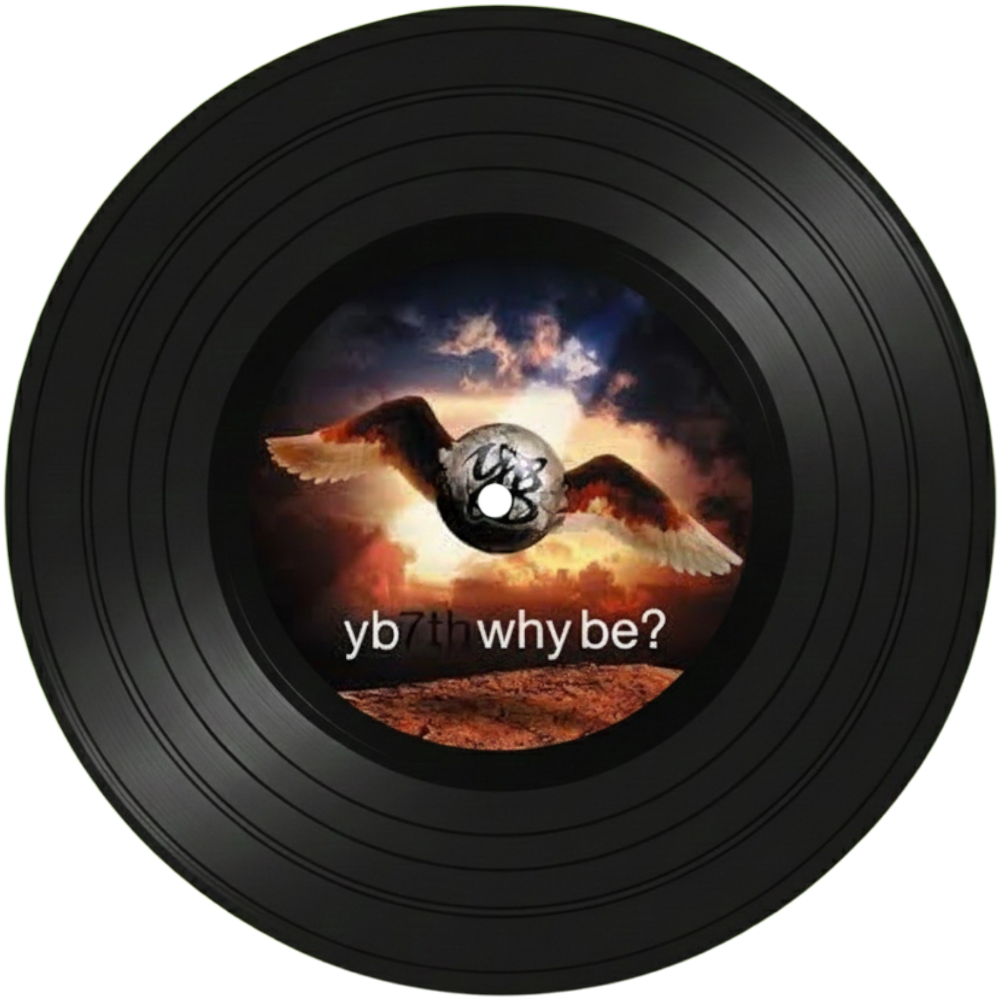
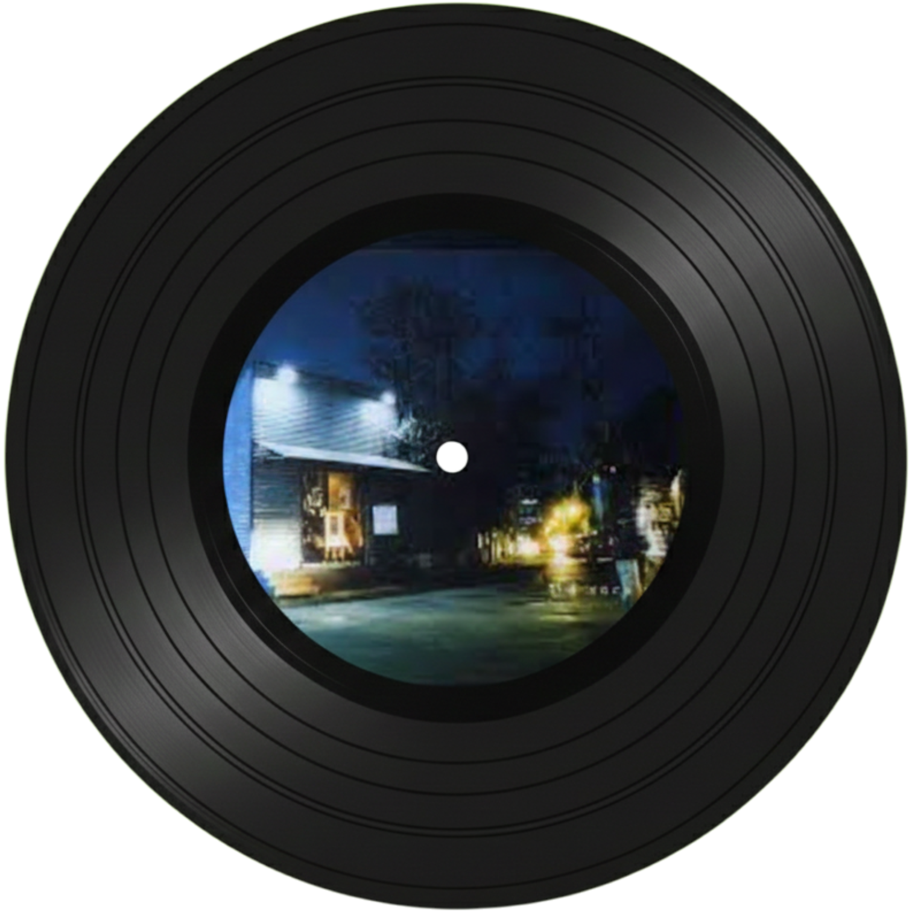
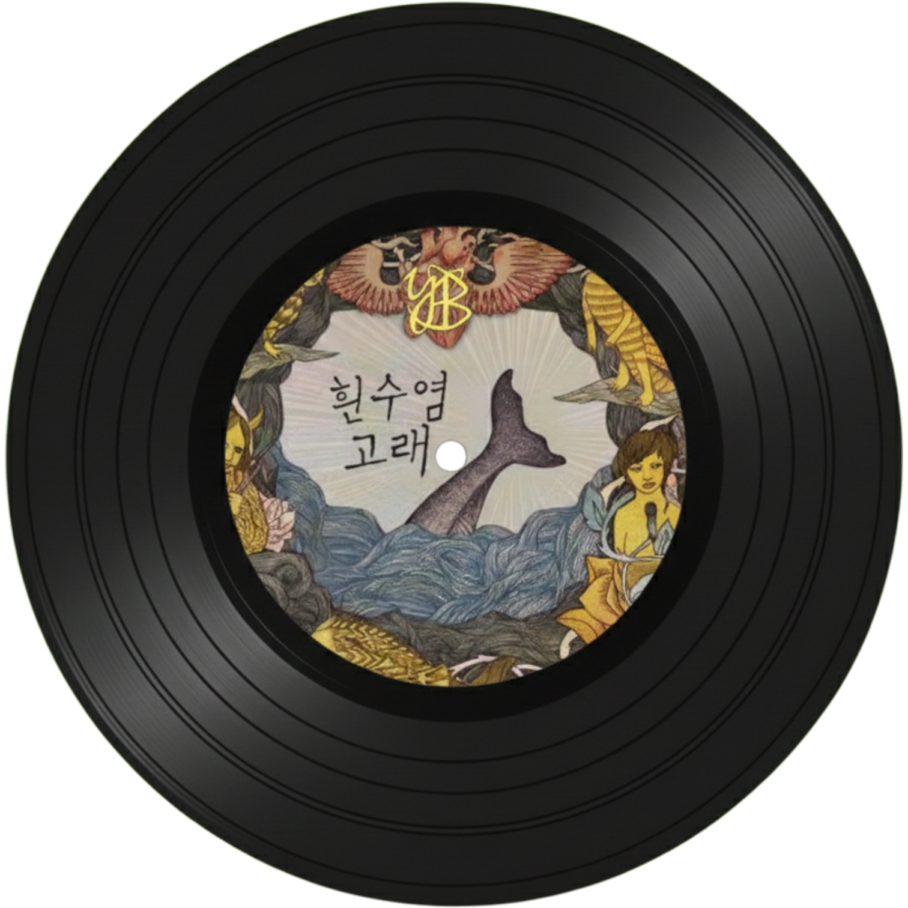

윤도현밴드

윤도현밴드
1994년 데뷔한 이후 현재까지 대학 축제에 빠지지 않을 정도로 열심히 활동하고 있고 한국의 가장 유명한 록 밴드라고도 할 수 있을 정도로 뛰어난 라이브와 퍼포먼스를 발휘하는 밴드이다. 때로는 희망적이고 때로는 신나고 때로는 위로마저 주는 윤도현밴드의 노래들을 살펴보자.

나는 나비
"윤도현밴드"하면 가장 먼저 떠오르고 가장 유명한 곡이기 때문에 소개하지 않을 수 없다. "날개를 활짝 펴고 세상을 자유롭게 날 거야" 등의 희망적이고 신나는 가사가 가득한, 들으면 행복해지는 노래이며, 심지어 윤도현밴드가 외국에 갔을 때 그 나라의 어린이들에게 짧게 노래를 불러주었는데 깜짝 이벤트로 그 어린이들이 답가로 다시 노래를 불러줬을 정도로 글로벌하게 유명한 곡이다.

너를 보내고
제목에서도 볼 수 있듯이 가사 내용은 전체적으로 사랑하는 사람을 떠나보내며 느끼는 감정들을 표현해낸 곡이며, 윤도현 특유의 절제하면서도 적당히 표현해내는 감정선이 드러나는 곡이다. 곡의 전체적인 분위기는 발라드라고 볼 수도 있지만, 윤도현의 목소리가 어우러져 의심의 여지가 없는 록 발라드가 된 곡이다.
잊을게
윤도현밴드 하면 주로 록발라드를 떠올릴 수 있겠지만, 사실 히트곡들이 록발라드가 많아서 그렇지 이런 빠르고 힘찬 비트의 곡들도 못하는 것이 아니다. 이 곡의 경우 사랑하는 사람과의 이별 후 그 사람을 그리워하면서 잊겠다는 내용의 가사 흐름이며, 슬픈 가사와 대비되는 빠른 템포와 힘차게 내지르는 고음으로 부르기에 쉽지 않은 노래이지만 윤도현의 뛰어난 소화력이 돋보이는 노래이다.

흰수염고래
윤도현밴드가 전하는 위로의 말 같은 노래이다. 삶이 너무 힘들면 혼자라고 생각하지 말고 흰수염고래처럼 헤엄치자는 희망의 메시지를 전해주는 가사 내용이며 QWER 등 수많은 가수들이 커버하면서 더욱 유명해진 곡이며, 현재까지도 많은 사람들이 위로받고 있는 곡이다.